Last updated: 2026-10-16
Checks: 7 0
Knit directory: b2ai_survey/
This reproducible R Markdown analysis was created with workflowr (version 1.7.2). The Checks tab describes the reproducibility checks that were applied when the results were created. The Past versions tab lists the development history.
Great! Since the R Markdown file has been committed to the Git repository, you know the exact version of the code that produced these results.
Great job! The global environment was empty. Objects defined in the global environment can affect the analysis in your R Markdown file in unknown ways. For reproduciblity it’s best to always run the code in an empty environment.
The command set.seed(20201118) was run prior to running the code in the R Markdown file. Setting a seed ensures that any results that rely on randomness, e.g. subsampling or permutations, are reproducible.
Great job! Recording the operating system, R version, and package versions is critical for reproducibility.
Nice! There were no cached chunks for this analysis, so you can be confident that you successfully produced the results during this run.
Great job! Using relative paths to the files within your workflowr project makes it easier to run your code on other machines.
Great! You are using Git for version control. Tracking code development and connecting the code version to the results is critical for reproducibility.
The results in this page were generated with repository version ce2a082. See the Past versions tab to see a history of the changes made to the R Markdown and HTML files.
Note that you need to be careful to ensure that all relevant files for the analysis have been committed to Git prior to generating the results (you can use wflow_publish or wflow_git_commit). workflowr only checks the R Markdown file, but you know if there are other scripts or data files that it depends on. Below is the status of the Git repository when the results were generated:
Ignored files:
Ignored: data/raw/
Note that any generated files, e.g. HTML, png, CSS, etc., are not included in this status report because it is ok for generated content to have uncommitted changes.
These are the previous versions of the repository in which changes were made to the R Markdown (analysis/onboarding.rmd) and HTML (docs/onboarding.html) files. If you’ve configured a remote Git repository (see ?wflow_git_remote), click on the hyperlinks in the table below to view the files as they were in that past version.
| File | Version | Author | Date | Message |
|---|---|---|---|---|
| html | ce2a082 | Emily Boyer | 2026-10-16 | Merge branch ‘onboarding-anonymized-2026-09’ into impact-dashboard |
| html | 5604aa5 | Emily Boyer | 2026-10-16 | Build site. |
| html | dec7feb | Emily Boyer | 2026-10-09 | Merge branch ‘onboarding-anonymized-2026-09’ into impact-dashboard |
| html | ba0f632 | Emily Boyer | 2026-10-09 | Build site. |
| html | 1526c4e | Emily Boyer | 2026-10-07 | Build site. |
| html | 7099f8b | Emily Boyer | 2026-10-02 | Build site. |
| Rmd | 393dae6 | Emily Boyer | 2026-10-02 | Read the anonymized combined onboarding data on the onboarding page |
| html | 9cd26c5 | Emily Boyer | 2026-10-01 | Add impact dashboard link to the navbar of existing pages |
| Rmd | 66ad9df | Emily Boyer | 2026-10-01 | Restore pre-existing pages to their original state |
| html | 66ad9df | Emily Boyer | 2026-10-01 | Restore pre-existing pages to their original state |
| html | 9198f77 | Emily Boyer | 2026-10-01 | Build site. |
| html | 4ae8e85 | Emily Boyer | 2026-10-01 | Rebuild site pages with impact dashboard link and hidden setup sections |
| Rmd | 287b1ac | Emily Boyer | 2026-10-01 | Hide setup and data preparation sections on onboarding and survey pages |
| Rmd | 609d00d | Janani Ravi | 2025-11-20 | Update analysis docs and site, improve onboarding |
| html | 609d00d | Janani Ravi | 2025-11-20 | Update analysis docs and site, improve onboarding |
| Rmd | 81a7e33 | Janani Ravi | 2025-11-05 | add onboarding analysis, workflowr |
This document provides a comprehensive analysis of Bridge2AI (B2AI) consortium onboarding data, examining team composition, temporal evolution, institutional diversity, and participation patterns across data generation projects (DGPs) and cores. The analysis focuses on understanding the structure and dynamics of this large-scale team science initiative.
Data generation projects:
Dataset dimensions: 511 people × 30 columnsData version: Nov 2025 onboarding form combined with Sept 2026 rosterPeople in both: 313 | Nov 2025 only: 126 | Sept 2026 only: 72 Total people after cleaning: 511 People with an onboarding date: 439 Date range: 2022-06-04 to 2025-08-08
Career stage inferred.Career stages identified from: trainee, srKey, and degrees columnsCreated anonymized institution IDs for 84 unique institutions| Metric | Count |
|---|---|
| Total participants | 511 |
| Complete responses | 511 |
| Incomplete responses | 0 |
| Senior key personnel | 85 |
| Trainees (all types) | 100 |
| DGP participants | 289 |
| Core participants | 182 |
| Both DGP and Core | 39 |
| Unique institutions | 84 |
| Unique countries | 5 |
| Multi-DGP participants | 25 |
| Multi-core participants | 45 |
| Career stage | Count | Percent |
|---|---|---|
| Mid (established) | 173 | 33.9 |
| Senior (established) | 75 | 14.7 |
| Mid (professional) | 71 | 13.9 |
| Early (staff) | 63 | 12.3 |
| Early (trainee) | 53 | 10.4 |
| Unknown | 43 | 8.4 |
| Early (career) | 33 | 6.5 |
| Career stage | Count | Percent |
|---|---|---|
| Mid | 244 | 47.7 |
| Early | 149 | 29.2 |
| Senior | 75 | 14.7 |
| Unknown | 43 | 8.4 |
| Component | DGP | Core |
|---|---|---|
| Voice | 75 | NA |
| AI-READi | 86 | NA |
| CHoRUS | 96 | NA |
| CM4AI | 67 | NA |
| Admin | NA | 35 |
| Ethics | NA | 55 |
| Teaming | NA | 47 |
| Standards | NA | 64 |
| Tools | NA | 36 |
| SWD | NA | 34 |
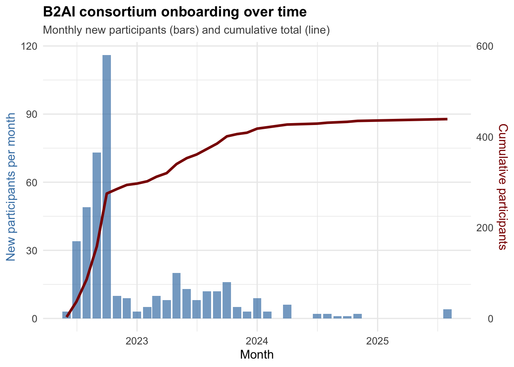
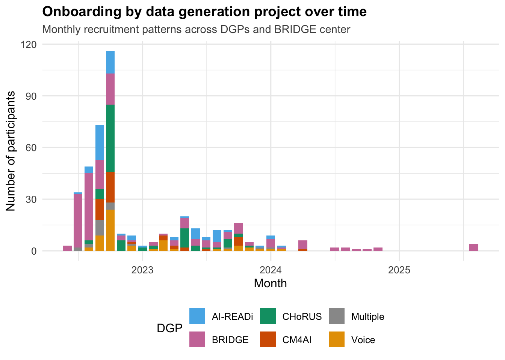
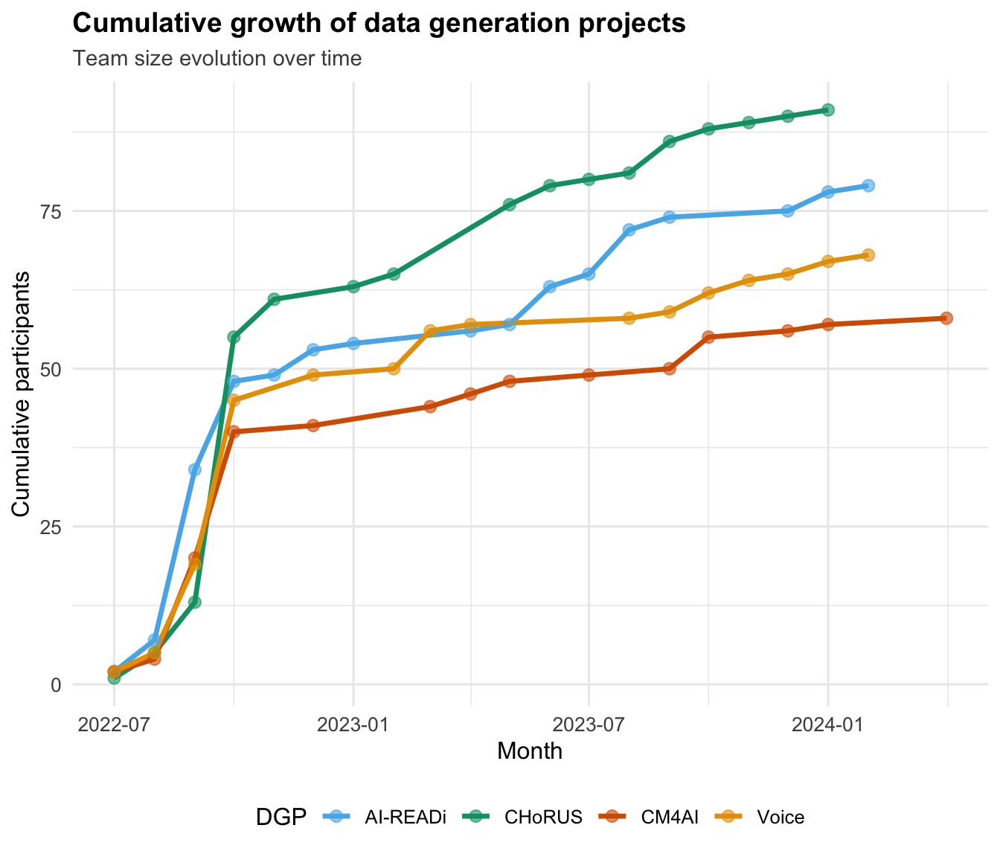
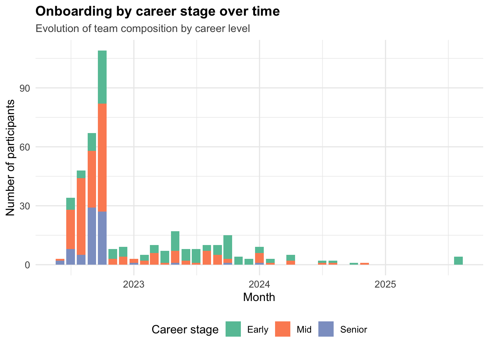
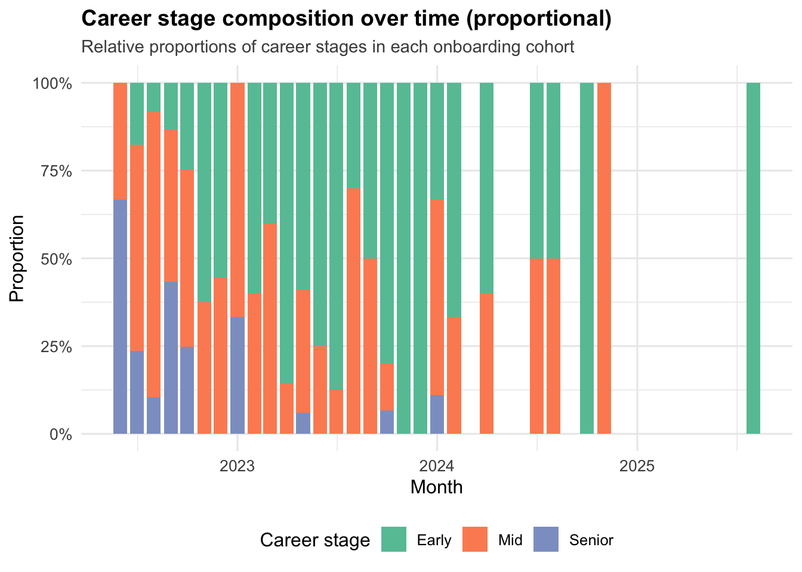
| Institution type | Participants | Percent |
|---|---|---|
| Academia | 334 | 65.4 |
| Other/Unknown | 55 | 10.8 |
| Healthcare/Clinical | 45 | 8.8 |
| Non-profit research | 45 | 8.8 |
| Government | 30 | 5.9 |
| Industry | 2 | 0.4 |
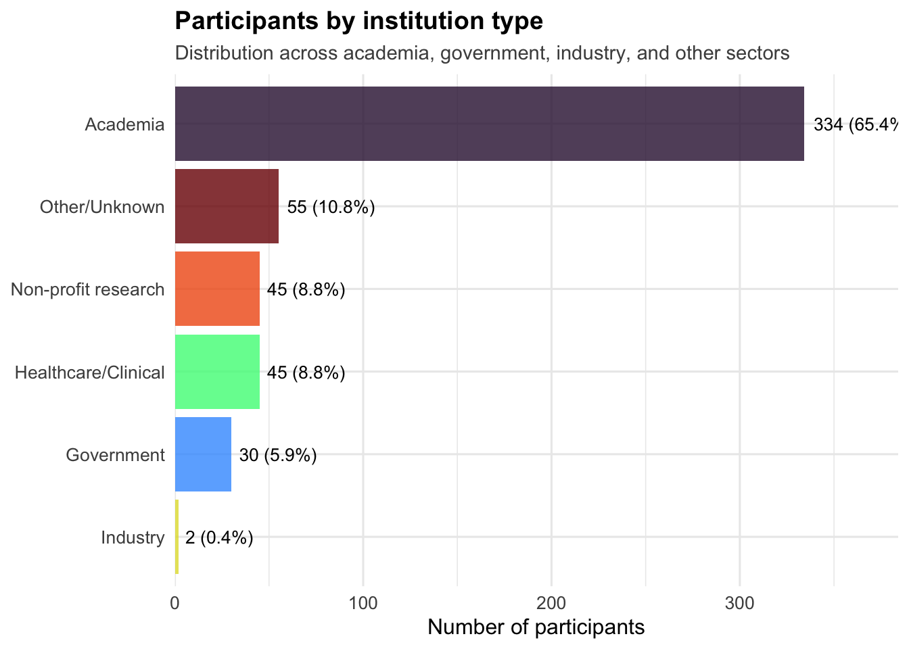
| Institution | Type | Participants | Percent | Cumulative % |
|---|---|---|---|---|
| University of California | Academia | 55 | 11.3 | 11.3 |
| Oregon Health & Science University | Academia | 24 | 4.9 | 16.3 |
| Sage Bionetworks | Non-profit research | 24 | 4.9 | 21.2 |
| Simon Fraser University | Academia | 20 | 4.1 | 25.4 |
| Yale University | Academia | 20 | 4.1 | 29.5 |
| National Institutes of Health | Government | 19 | 3.9 | 33.4 |
| Johns Hopkins University | Academia | 17 | 3.5 | 36.9 |
| Vanderbilt University Medical Center | Academia | 17 | 3.5 | 40.4 |
| University of Florida | Academia | 15 | 3.1 | 43.5 |
| University of South Florida | Academia | 14 | 2.9 | 46.4 |
| University of California, San Diego | Academia | 13 | 2.7 | 49.1 |
| Duke University | Academia | 12 | 2.5 | 51.5 |
| Massachusetts General Hospital | Healthcare/Clinical | 12 | 2.5 | 54.0 |
| University of Colorado | Academia | 12 | 2.5 | 56.5 |
| Nationwide Children’s Hospital | Healthcare/Clinical | 11 | 2.3 | 58.8 |
| University of Virginia | Academia | 11 | 2.3 | 61.0 |
| University of Alabama at Birmingham | Academia | 10 | 2.1 | 63.1 |
| University of Washington | Academia | 10 | 2.1 | 65.2 |
| Stanford University | Academia | 9 | 1.9 | 67.0 |
| Emory University | Academia | 8 | 1.6 | 68.7 |
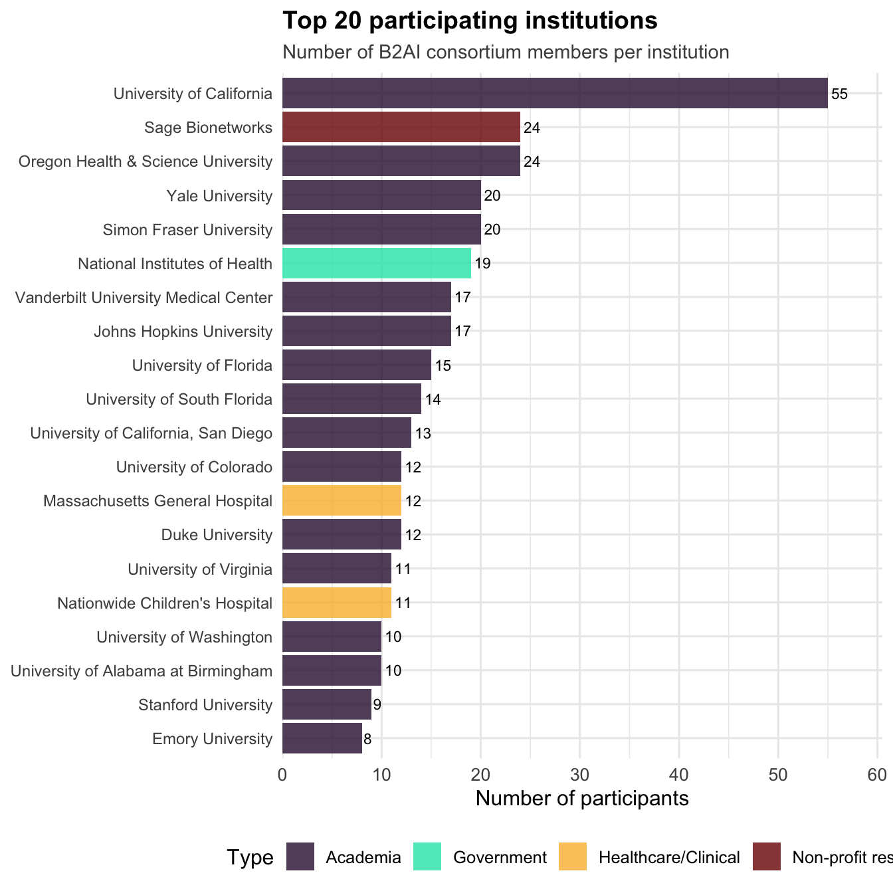
| Metric | Value |
|---|---|
| Total unique institutions (excluding ‘Other’) | 84 institutions |
| Top 5 institutions represent | 29.5% of participants |
| Top 10 institutions represent | 46.4% of participants |
| Top 20 institutions represent | 68.7% of participants |
| Remaining institutions represent | 31.3% of participants |
| Institution ID | Type | Participants | Percent | Cumulative % |
|---|---|---|---|---|
| Academia_60 | Academia | 55 | 11.3 | 11.3 |
| Academia_38 | Academia | 24 | 4.9 | 16.3 |
| Non-profit research_40 | Non-profit research | 24 | 4.9 | 21.2 |
| Academia_44 | Academia | 20 | 4.1 | 25.4 |
| Academia_84 | Academia | 20 | 4.1 | 29.5 |
| Government_33 | Government | 19 | 3.9 | 33.4 |
| Academia_16 | Academia | 17 | 3.5 | 36.9 |
| Academia_80 | Academia | 17 | 3.5 | 40.4 |
| Academia_68 | Academia | 15 | 3.1 | 43.5 |
| Academia_73 | Academia | 14 | 2.9 | 46.4 |
| Academia_63 | Academia | 13 | 2.7 | 49.1 |
| Academia_65 | Academia | 12 | 2.5 | 51.5 |
| Academia_9 | Academia | 12 | 2.5 | 54.0 |
| Healthcare/Clinical_19 | Healthcare/Clinical | 12 | 2.5 | 56.5 |
| Academia_77 | Academia | 11 | 2.3 | 58.8 |
| Healthcare/Clinical_35 | Healthcare/Clinical | 11 | 2.3 | 61.0 |
| Academia_57 | Academia | 10 | 2.1 | 63.1 |
| Academia_78 | Academia | 10 | 2.1 | 65.2 |
| Academia_46 | Academia | 9 | 1.9 | 67.0 |
| Academia_11 | Academia | 8 | 1.6 | 68.7 |
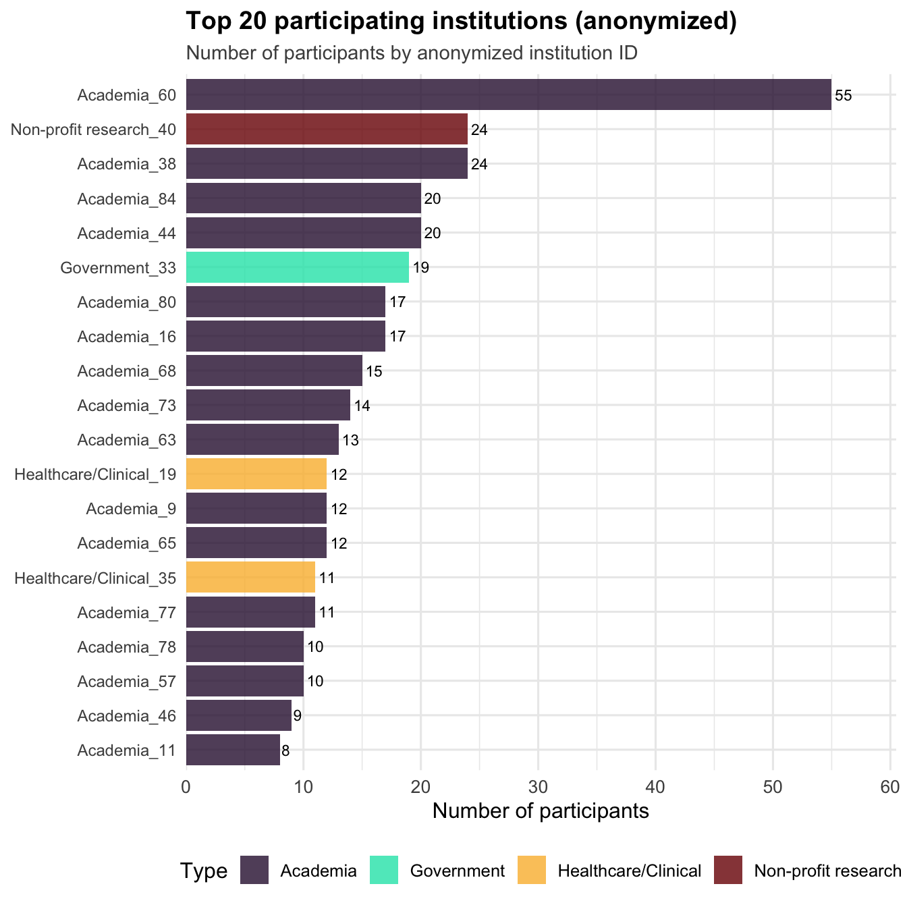
| Country | Participants | Percent |
|---|---|---|
| USA | 114 | 87.0 |
| Canada | 12 | 9.2 |
| France | 3 | 2.3 |
| UK | 1 | 0.8 |
| Ukraine | 1 | 0.8 |
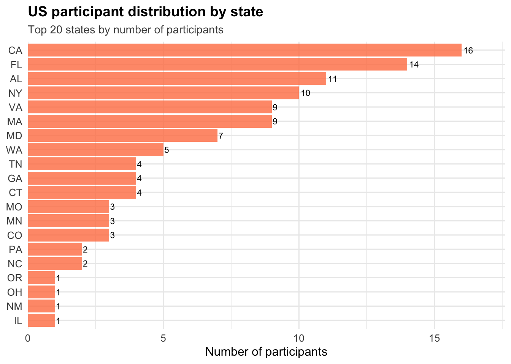
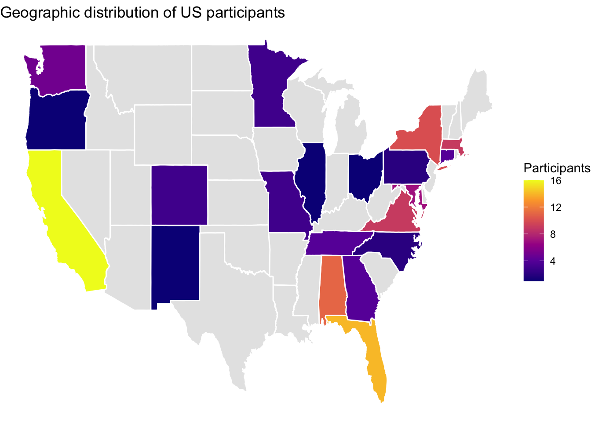
| DGP | Participants | Institutions | Inst. types | States | Countries | Participants/Institution |
|---|---|---|---|---|---|---|
| AI-READi | 70 | 18 | 3 | 5 | 1 | 3.9 |
| CHoRUS | 84 | 27 | 5 | 14 | 2 | 3.1 |
| CM4AI | 51 | 18 | 3 | 6 | 2 | 2.8 |
| Multiple | 25 | 19 | 3 | 7 | 2 | 1.3 |
| Voice | 58 | 23 | 4 | 7 | 3 | 2.5 |
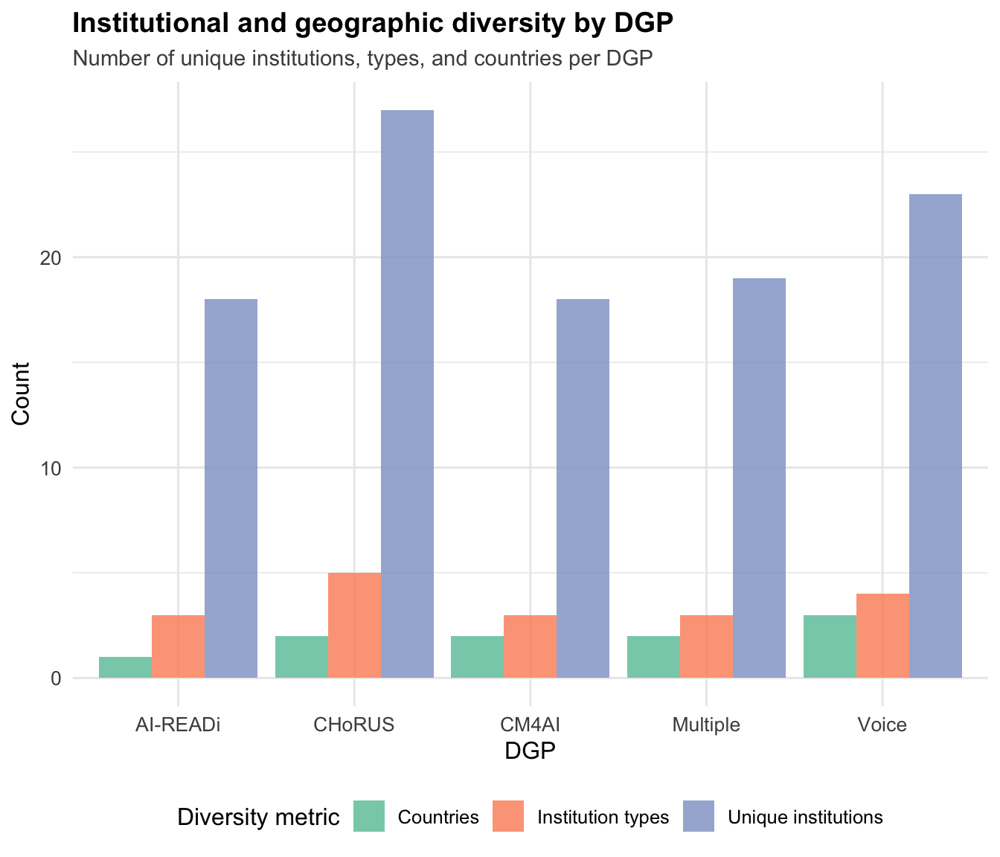
| Expertise area | Count |
|---|---|
| ML/AI tools and methods | 208 |
| Ethical AI | 154 |
| Data Visualization | 144 |
| Data Integration Technologies | 140 |
| Jupyter Notebooks | 107 |
| Biomedical Informatics | 106 |
| Other Discipline | 106 |
| Project Management | 100 |
| Clinical Standards | 98 |
| Cloud computing expertise | 98 |
| R | 96 |
| Equity in Community Participation | 87 |
| Public Health | 86 |
| Deidentification and Security | 74 |
| Reproducibility | 74 |
| Terminologies | 69 |
| Science of Team Science | 68 |
| Challenges and Evaluation | 66 |
| Genetics | 64 |
| Graph Technologies | 58 |
| Systems Biology | 56 |
| Communications | 55 |
| Neuroscience | 55 |
| Operations | 55 |
| Governance | 54 |
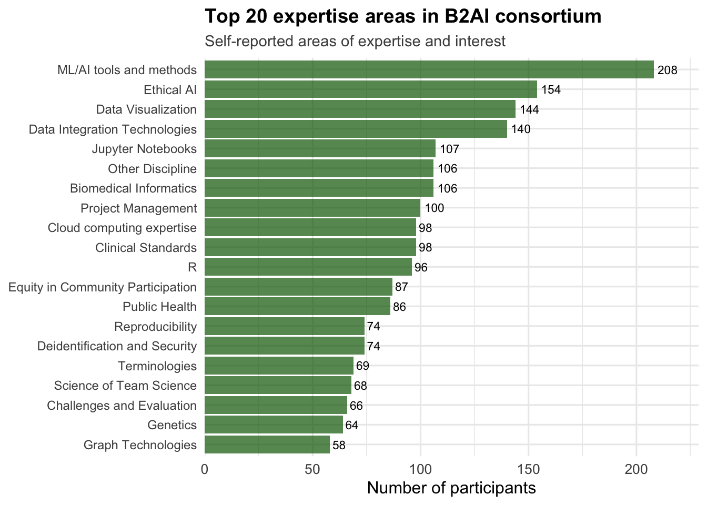
| Degree | Count |
|---|---|
| PhD | 228 |
| MS | 79 |
| BS | 71 |
| MD | 62 |
| BA | 32 |
| MA | 21 |
| MPH | 15 |
| MBA | 13 |
| Other | 10 |
| JD | 5 |
| BS In Progress | 3 |
| MEng | 3 |
| PhD Candidate | 3 |
| DHA | 2 |
| MEd | 2 |
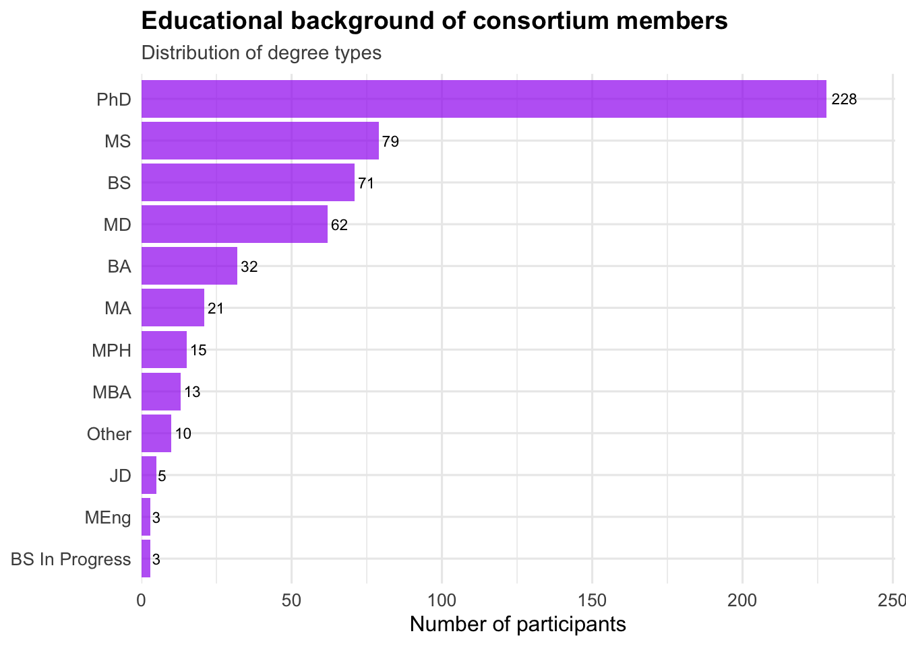
| Number of DGPs | Participants | Percent | Category |
|---|---|---|---|
| 0 | 222 | 43.4 | No DGP |
| 1 | 264 | 51.7 | Single DGP |
| 2 | 20 | 3.9 | Multiple DGPs |
| 4 | 5 | 1.0 | Multiple DGPs |
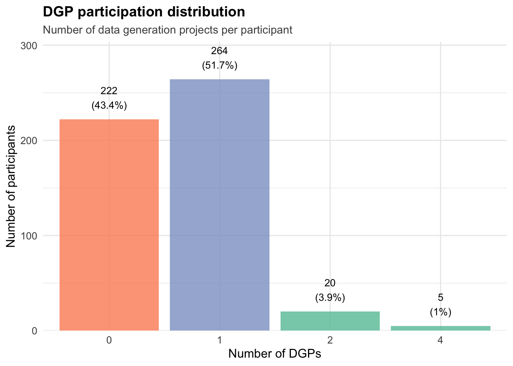
| Number of Cores | Participants | Percent | Category |
|---|---|---|---|
| 0 | 329 | 64.4 | No Core |
| 1 | 137 | 26.8 | Single Core |
| 2 | 27 | 5.3 | Multiple Cores |
| 3 | 8 | 1.6 | Multiple Cores |
| 5 | 4 | 0.8 | Multiple Cores |
| 6 | 6 | 1.2 | Multiple Cores |
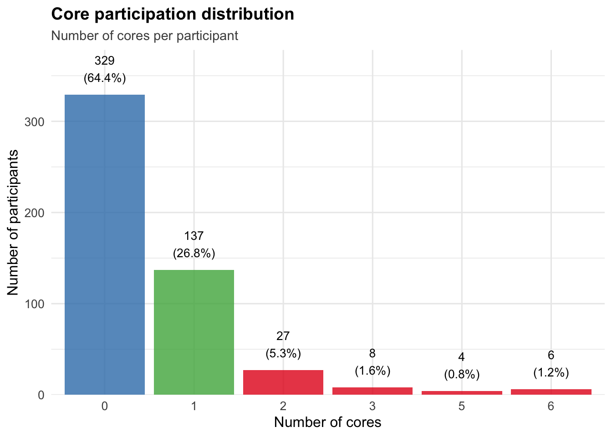
| Participation type | Participants | Percent |
|---|---|---|
| Core only | 143 | 28.0 |
| DGP + Core | 39 | 7.6 |
| DGP only | 250 | 48.9 |
| Other | 79 | 15.5 |
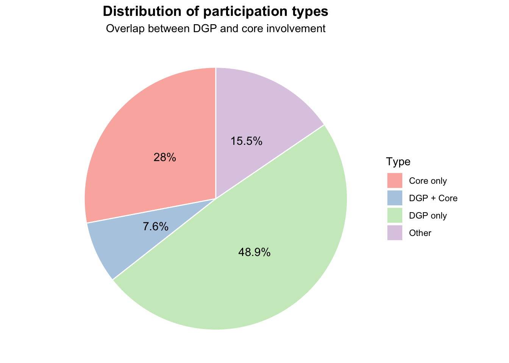
| primary_dgp | n_Early | n_Mid | n_Senior | percent_Early | percent_Mid | percent_Senior |
|---|---|---|---|---|---|---|
| AI-READi | 23 | 28 | 15 | 34.8 | 42.4 | 22.7 |
| CHoRUS | 25 | 41 | 18 | 29.8 | 48.8 | 21.4 |
| CM4AI | 21 | 19 | 10 | 42.0 | 38.0 | 20.0 |
| Multiple | 5 | 14 | 6 | 20.0 | 56.0 | 24.0 |
| Voice | 25 | 27 | 6 | 43.1 | 46.6 | 10.3 |
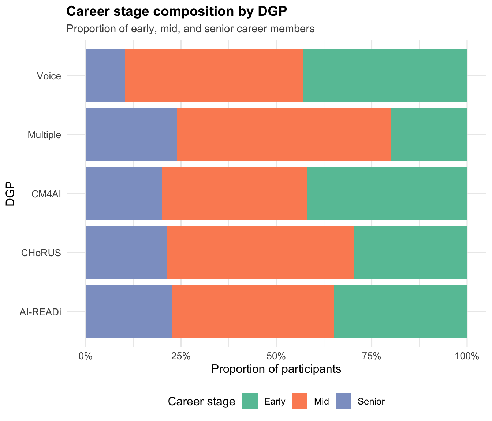
| DGP | Total | Sr. Key | Sr. Key % | Trainees | Trainee % |
|---|---|---|---|---|---|
| AI-READi | 70 | 17 | 24.3 | 18 | 25.7 |
| CHoRUS | 84 | 19 | 22.6 | 17 | 20.2 |
| CM4AI | 51 | 11 | 21.6 | 18 | 35.3 |
| Multiple | 25 | 7 | 28.0 | 4 | 16.0 |
| Voice | 59 | 7 | 11.9 | 22 | 37.3 |
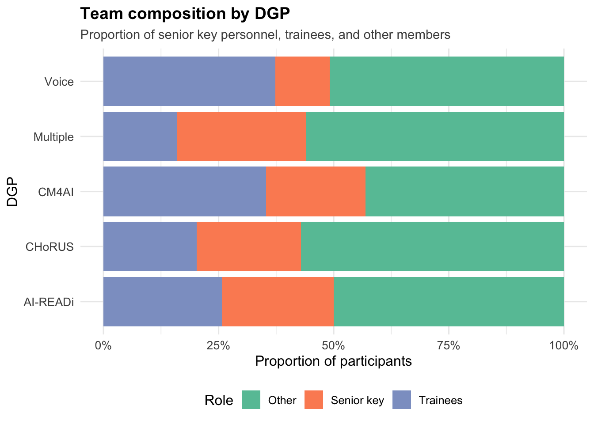
| DGP | Members | Unique expertise areas | Total expertise tags | Expertise/member | Diversity score |
|---|---|---|---|---|---|
| Multiple | 25 | 47 | 219 | 8.76 | 1.88 |
| CM4AI | 51 | 47 | 293 | 5.75 | 0.92 |
| Voice | 59 | 47 | 320 | 5.42 | 0.80 |
| AI-READi | 70 | 45 | 401 | 5.73 | 0.64 |
| CHoRUS | 84 | 47 | 520 | 6.19 | 0.56 |
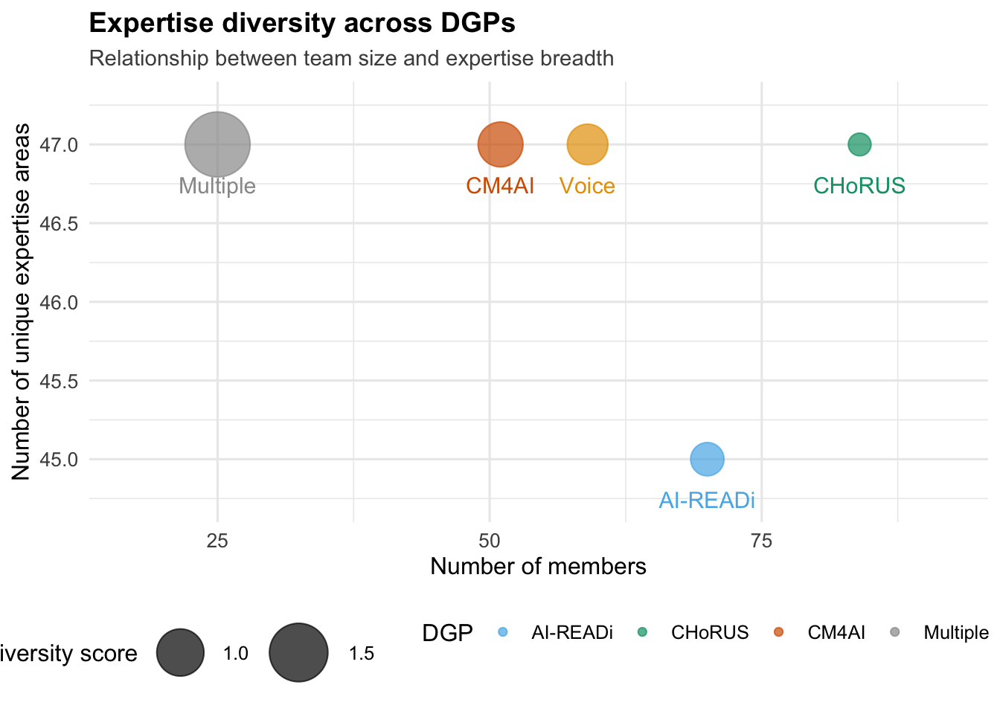
| DGP | Participants | Institutions | Inst. types | Possible pairs | Avg. per inst. | Distribution index |
|---|---|---|---|---|---|---|
| AI-READi | 70 | 18 | 3 | 2,415 | 3.89 | 0.26 |
| CHoRUS | 84 | 27 | 5 | 3,486 | 3.11 | 0.32 |
| CM4AI | 51 | 18 | 3 | 1,275 | 2.83 | 0.35 |
| Multiple | 25 | 19 | 3 | 300 | 1.32 | 0.76 |
| Voice | 58 | 23 | 4 | 1,653 | 2.52 | 0.40 |
| DGP combination | Number of participants |
|---|---|
| All 4 DGPs | 5 |
| Voice + AI-READi | 5 |
| Voice + CM4AI | 5 |
| AI-READi + CHoRUS | 3 |
| AI-READi + CM4AI | 3 |
| CHoRUS + CM4AI | 3 |
| Voice + CHoRUS | 1 |
| DGP | Participants | Inst. types | Diversity index | Sector balance |
|---|---|---|---|---|
| AI-READi | 67 | 3 | 0.6 | 0.15 |
| CHoRUS | 81 | 5 | 1.0 | 0.72 |
| CM4AI | 48 | 3 | 0.6 | 0.17 |
| Multiple | 23 | 3 | 0.6 | 0.61 |
| Voice | 51 | 4 | 0.8 | 0.67 |
| Field | Completion rate (%) |
|---|---|
| Primary affiliation | 94.9 |
| ORCID | 94.9 |
| Expertise | 94.3 |
| Degrees | 92.8 |
| Department | 64.2 |
| Bio/profile link | 44.8 |
| GitHub handle | 30.1 |
| Country | 25.6 |
| State | 22.1 |
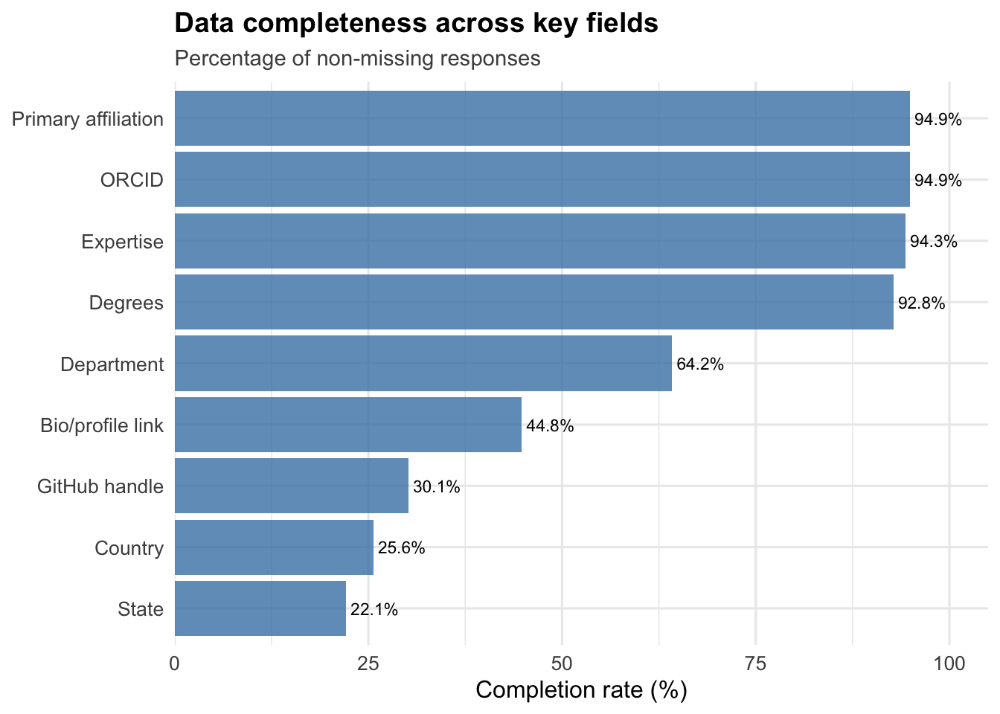
| Metric | Value |
|---|---|
| Total participants onboarded | 511 |
| Unique institutions represented | 84 |
| Institution types represented | 5 |
| Countries represented | 5 |
| US states represented | 23 |
| Data generation projects (DGPs) | 4 (Voice, AI-READi, CHoRUS, CM4AI) |
| Core teams | 6 (Admin, Ethics, Teaming, Standards, Tools, SWD) |
| Senior key personnel | 85 |
| Trainees (all types) | 100 |
| Multi-DGP participants | 25 |
| Multi-core participants | 45 |
| Unique expertise areas reported | 50 |
| Average expertise tags per person | 6.30 |
| Date range of onboarding | 2022-06-04 to 2025-08-08 |
Temporal patterns:
Institutional diversity:
Team composition:
Expertise landscape:
The current dataset provides:
Sufficient data for:
Limited data for:
To evaluate “successful collaborations” and refine team composition analyses:
Primary data: anonymized B2AI onboarding data combining the Nov 2025 onboarding form and the Sept 2026 roster (file: B2AI_onboarding_combined_anonymized.csv)
Column usage: - Career stage inferred from: trainee, srKey, degrees - DGP participation from: Voice_*, AI-READi_*, CHoRUS_*, CM4AI_* module columns - Core participation from: Admin_core-deprecate, Ethics_core, Teaming_core_depr, Standards_core_depr, Tools_core_deprecate, SWD_core_deprecate - Institution type classified from: primaryAffilName using keyword matching
Analysis completed: 2026-10-16 13:52:01.941222
Data file: B2AI_onboarding_combined_anonymized.csv
Notes: This analysis provides descriptive summaries and visualizations of B2AI consortium composition and structure. For evaluating team effectiveness and collaboration success, integration with additional data sources (publications, deliverables, surveys) is recommended.
R version 4.5.1 (2025-06-13)
Platform: aarch64-apple-darwin20
Running under: macOS Tahoe 26.6.2
Matrix products: default
BLAS: /Library/Frameworks/R.framework/Versions/4.5-arm64/Resources/lib/libRblas.0.dylib
LAPACK: /Library/Frameworks/R.framework/Versions/4.5-arm64/Resources/lib/libRlapack.dylib; LAPACK version 3.12.1
locale:
[1] C.UTF-8/C.UTF-8/C.UTF-8/C/C.UTF-8/C.UTF-8
time zone: America/Denver
tzcode source: internal
attached base packages:
[1] stats graphics grDevices utils datasets methods base
other attached packages:
[1] kableExtra_1.4.0 knitr_1.51 viridis_0.6.5 viridisLite_0.4.3
[5] ggridges_0.5.7 patchwork_1.3.1 scales_1.4.0 here_1.0.2
[9] lubridate_1.9.5 forcats_1.0.0 stringr_1.6.0 dplyr_1.2.1
[13] purrr_1.2.1 readr_2.2.0 tidyr_1.3.2 tibble_3.3.1
[17] ggplot2_4.0.2 tidyverse_2.0.0
loaded via a namespace (and not attached):
[1] gtable_0.3.6 xfun_0.57 bslib_0.10.0 tzdb_0.5.0
[5] vctrs_0.7.2 tools_4.5.1 generics_0.1.4 parallel_4.5.1
[9] pkgconfig_2.0.3 RColorBrewer_1.1-3 S7_0.2.1 lifecycle_1.0.5
[13] compiler_4.5.1 farver_2.1.2 git2r_0.36.2 textshaping_1.0.1
[17] httpuv_1.6.17 maps_3.4.3 htmltools_0.5.9 sass_0.4.10
[21] yaml_2.3.12 later_1.4.8 pillar_1.11.1 crayon_1.5.3
[25] jquerylib_0.1.4 whisker_0.4.1 cachem_1.1.0 tidyselect_1.2.1
[29] digest_0.6.39 stringi_1.8.7 labeling_0.4.3 rprojroot_2.1.1
[33] fastmap_1.2.0 grid_4.5.1 cli_3.6.5 magrittr_2.0.5
[37] withr_3.0.2 promises_1.5.0 bit64_4.6.0-1 timechange_0.4.0
[41] rmarkdown_2.31 bit_4.6.0 otel_0.2.0 gridExtra_2.3
[45] workflowr_1.7.2 hms_1.1.4 evaluate_1.0.5 rlang_1.2.0
[49] Rcpp_1.1.1 glue_1.8.0 xml2_1.5.2 svglite_2.2.2
[53] rstudioapi_0.17.1 vroom_1.7.1 jsonlite_2.0.0 R6_2.6.1
[57] systemfonts_1.3.2 fs_2.0.1